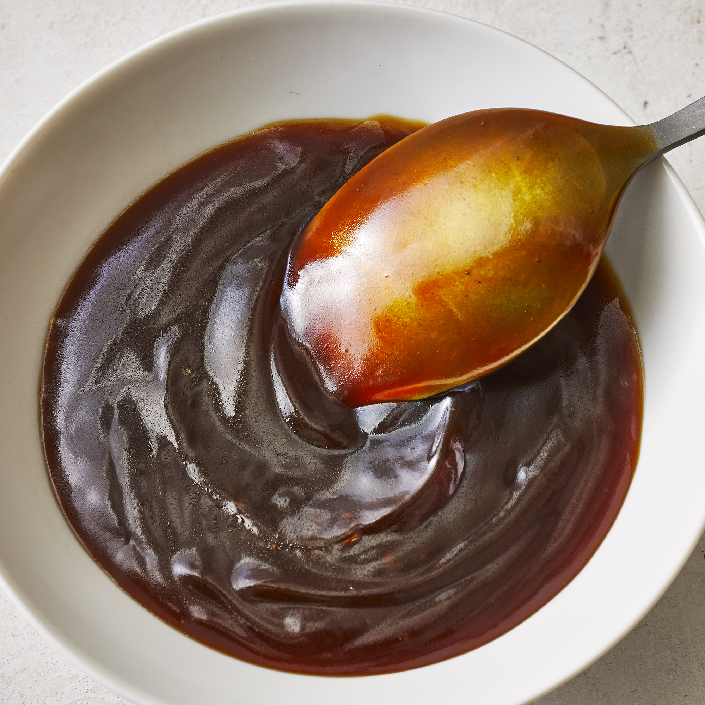

Simple Teriyaki Sauce

Description
This simple but amazing teriyaki sauce is great for chicken, fish, or meat dishes.
Ingredients
- Water
- Soy Sauce
- Packed Brown Sugar
- Honey
- Ground Ginger
- Garlic Powder
- Cornstarch
Steps
-
Combine 1 cup water, soy sauce, brown sugar, honey, ginger, and garlic powder in a saucepan over medium heat. Cook until nearly heated through, about 1 minute.
-
Mix cornstarch and 1/4 cold water together in a cup; stir until dissolved. Add to the saucepan. Cook and stir sauce until thickened, 5 to 7 minutes.
Back to home page